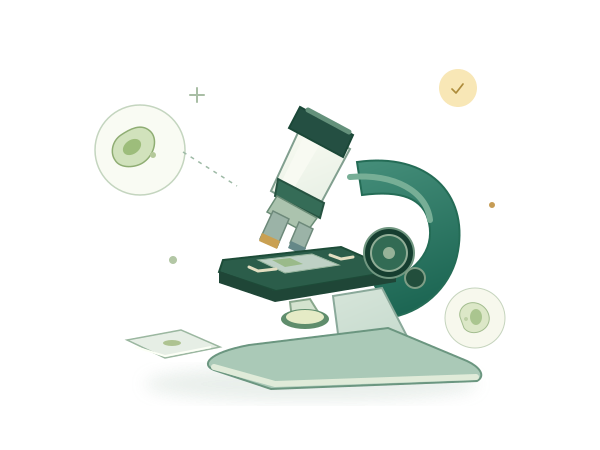

从微小处，发现新世界

OBSERVE · WONDER · DISCOVER
OUR LITTLE SCIENCE LAB
把“我觉得”，
变成“我发现”。
这里是属于小小探索者的科学实验室。虚拟资源帮助我们熟悉工具、提出问题，也鼓励我们回到真实世界，亲手寻找证据。
- 01
带着问题观察
仔细看一看，发现值得研究的现象。
- 02
留下真实记录
用文字、图画或数据，保存你的发现。
- 03
用证据作出解释
比较、交流，也为新的问题留一点空间。

OUR LITTLE SCIENCE LAB
这里是属于小小探索者的科学实验室。虚拟资源帮助我们熟悉工具、提出问题，也鼓励我们回到真实世界，亲手寻找证据。
仔细看一看，发现值得研究的现象。
用文字、图画或数据，保存你的发现。
比较、交流，也为新的问题留一点空间。